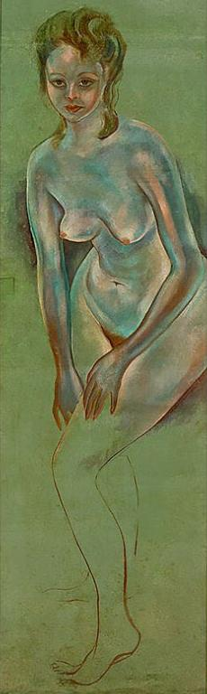
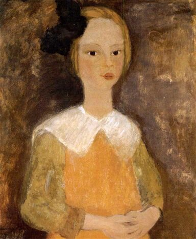
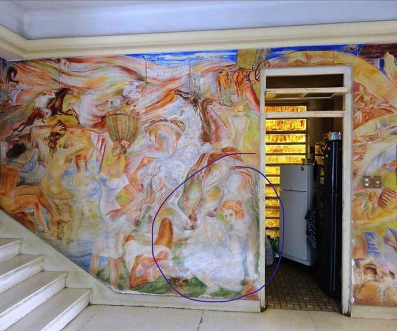
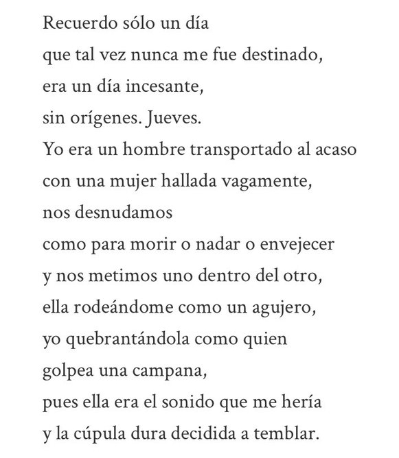

Los Hilos de Monik
"Eva en el baño", historia tras la pintura
Publicado el 8 de julio de 2020 - 11 tweets - Hilo original en Twitter
1
¿Has estado en el Museo de Arte Cubano?
Si has ido, quizás hayas visto esta pintura: "Eva en el baño" (1943) del pintor cubano Carlos Enríquez.
Olvida "El rapto de las mulatas". Esta es la joyita de esa sala.
En parte, porque está asociada a tremendo chisme 😜
2
Primero: ¿sabías que no es una pintura "normal"?
Pues sí ... Eva está pintada en la hoja de una puerta de baño. ¿Por qué?, te preguntarás.
Bueeeeno ... pues Eva era la esposa de Carpentier, y él la llevó para que Carlos Enríquez la pintara.
Digamos que no sólo la pintó 😂
3
Te cuento.
Eva Fréjaville fue una francesa, de quien se decía que era hija ilegítima de Diego Rivera (quien le hizo este retrato)
Carpentier la conoce en Paris y se mudan a La Habana en 1939 (donde se casaron) huyéndole a la guerra.
El matrimonio duró un mes.
4
Carpentier, que era amigo de Carlos Enríquez, llevó a Eva para que la retratara.
Según el historiador Juan Sánchez, cuando Carpentier la iba a recoger, los 3 salían a pasear por La Habana en el automóvil de Carlos Enríquez.
Y fue en ese carro que las cosas se complicaron.
5
La ruptura de Eva con Carpentier, o "rapto" como la llama el biógrafo de Carlos Enríquez, se dio en medio del Malecón.
Según cuenta Marcelo Pogolotti, en uno de estos paseos Carlos dió un frenazo y le preguntó a Eva si quería seguir con Alejo o irse con él.
6
Eva escogió a Carlos. En ese momento bajaron a Carpentier del carro y lo dejaron "botado" en el Malecón.
Más tarde Carpentier fue a pedirle cuentas en su casa, el Hurón Azul, y Carlos Enríquez ¡le sacó un revólver!
De más está decir que Carpentier más nunca le habló.
7
Un tiempo después, Eva y Carlos se casaron. Ella fue su musa durante algunos años y se dice que casi todas las mujeres de su obra están inspiradas en ella.
Pero al parecer él era muy celoso. Ella terminó dejándolo ... por otra mujer
8
Cynthia Carleton, una inglesa que se hizo habitual en las famosas fiestas/orgías del Hurón Azul, comenzó una aventura con Eva, inicialmente estimulada por Carlos. Pero luego se fugaron juntas.
Carlos quedó tan devastado que cubrió la puerta de Eva con pintura, para no verla.
9
El arquitecto Jorge Fernández de Castro, viendo esto, le pidió la puerta (pensando en restaurarla) y Carlos aceptó a cambio de que le pusiera una nueva. "A fin de cuentas, la pinté donde merece estar", le dijo.
Tiempo después Eva se casó con el médico Enrique Collado.
10
Otros corazones cayeron bajo su encanto. Entre ellos, el chileno Pablo Neruda, quien la conoció en Paris estando con Carpentier.
Neruda le dedicó (secretamente) el poema Las furias y las penas, un poema de frustración ante la amante perdida.
11
Nota final: Eva se fue de Cuba tras el triunfo de la Revolución. Murió en 1998, a los 85 años, en California, EE.UU.
¡Debe haber sido una abuela con historias fascinantes!
Así que la próxima vez que vayas al Museo de Arte Cubano, pasa a ver a Eva y salúdala.